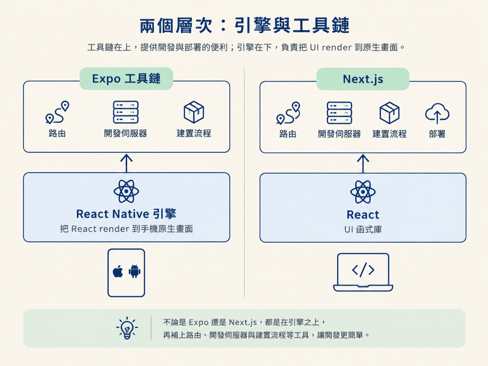

完成這一節後，你應該能分辨 React Native 與 Expo 各自負責什麼，也能說出 Expo SDK、CLI、Expo Router 與 EAS，分別位在開發流程的哪個位置。
上一節已經把 React Native 的核心原理拆開了：React 的邏輯不變，只是 render 的終點從瀏覽器換成手機上的原生畫面。
但理解原理，並不會自動幫你把專案建立起來。如果只使用 React Native，你還得自己處理 iOS 與 Android 兩套原生專案設定、原生模組安裝、字型與圖示資產，以及最後的打包與上架。對只想先做出產品的人來說，這些基礎工程很容易變成一堵高牆。
Expo 就是用來拆掉這堵牆的工具鏈。很多人會把 Expo 和 React Native 當成同一件事，但它們其實位在不同層次：React Native 是引擎，Expo 則是圍繞這顆引擎打造的一整套工具鏈。

這一節會把 Expo 拆開來看。之後你再讀 Expo 文件或看到相關指令時，就能知道它是在流程的哪一格發揮作用，而不是把所有東西都混成一團。
React Native 負責的是最核心的工作：把 React 接到手機的原生畫面上。Expo 則建立在 React Native 之上，提供一組開箱即用的工具與服務，讓你不用從零開始處理原生專案的各種細節。
課程對 Expo 的定位很直接：這是 2026 年開始製作手機 app 時，最順手的方式之一。你可以免費起步；如果要認真把 app 上架到 App Store 或 Play Store，才會需要付月費。
如果你熟悉 Next.js，可以用它來做對照。React 是 UI 函式庫，而 Next.js 在 React 上面補上路由、build、dev server 與部署流程。
Expo 對 React Native 的角色也有點像這樣：它在引擎之上提供路由、開發伺服器與建置流程。不過兩者還是有一個重要差異：Next.js 最後通常產出的是在伺服器與瀏覽器上執行的內容；Expo 最後要產出的是可以安裝到手機上的 app binary，因此還多了一層原生建置工作。
把 Expo 拆開來看，你會看到幾個各自負責不同階段的部分：
| 部分 | 它在做什麼 | 出現在流程的哪裡 |
|---|---|---|
Expo CLI 與 create-expo-app | 用一行指令建立專案骨架，並啟動開發伺服器 | 專案一開始 |
| Expo SDK | 提供一組彼此相容、會隨 SDK 版本更新的套件 | 開發每個功能時 |
| Expo Router | 採用檔案式路由，用檔案結構決定畫面與導覽 | 畫面與導覽 |
| EAS（Expo Application Services） | 提供雲端建置與上架相關服務 | 要安裝到真機或送審時 |
最先碰到的通常是 CLI。課程的起手式，是先從官方文件複製 create-expo-app 指令，在空資料夾裡建立專案，接著執行 expo start，把 app 開到模擬器裡。
指令後面通常還會指定 SDK 版本。課程錄影當下使用的是 SDK 57，但這個數字會隨時間更新。因此，真正需要記住的不是某個固定版本，而是：SDK 版本要以當下的官方文件為準。
接下來每天開發功能時，最常碰到的是 SDK。SDK 不是單一函式庫，而是一整組由 Expo 維護、彼此保持相容的套件，例如相機、檔案與 native tabs 等功能。
當你要安裝其中一項功能時，通常會使用 Expo 建議的安裝方式，讓工具挑選與目前 SDK 相容的版本。這比自己隨意抓一個版本安全得多，因為套件之間就像齒輪一樣，尺寸對不上時，整組機器可能就轉不動。
Expo Router 是這條工具鏈裡最像 Next.js 的部分。它採用檔案式路由：你在 app 目錄底下放一個檔案，這個檔案就會對應成一個畫面；放入一個 _layout.tsx，它就會成為那一層共用的外框。
後面的 Step 5 會拿一個真實的 layout 檔案，帶你讀懂這種檔案結構是如何組成畫面的。
最後是 EAS。當你想把 app 安裝到自己的 iPhone，或送到 TestFlight 與 App Store 時，就會使用 EAS 進行雲端建置。這部分會在後面的節點詳細處理；現在先把它放在工具鏈的末端，知道它和「產出及上架 app」有關即可。
安裝 Expo 並執行 expo start 後，你會看到一個叫作 Expo Go 的工具。掃描 QR code，就能直接在手機上看到畫面。
這個體驗太順了，容易讓人誤以為「Expo 就是 Expo Go」。其實，Expo Go 只是整條工具鏈中的一個練習用工具。它比較像一個通用容器，預先裝好固定幾組原生能力，讓你不用先建置專屬 app，也能測試純 JavaScript 的畫面。
但如果你的 app 用到了 Expo Go 沒有內建的原生模組，這個通用容器就不夠用了。這時你必須自己產出一個專屬的 app。
這條分岔路是新手最常跌倒的地方。所以下一節會把它獨立出來，當成一個決策問題來談：什麼時候可以繼續使用 Expo Go，什麼時候一定要製作 development build。
React Native 是引擎，Expo 是包住這顆引擎的整條工具鏈：CLI 與 create-expo-app 負責建立與啟動專案，SDK 提供一組彼此相容的套件，Expo Router 提供檔案式路由，EAS 則負責雲端建置與上架。Expo Go 只是其中一個練習用容器，並不等於 Expo 的全部。
現在你可以把 Expo 的各個部分接回開發流程：先用 CLI 建立專案，再用 SDK 開發功能，用 Expo Router 組織畫面；等到要產出真機版本或送審時，再交給 EAS。
工具鏈的輪廓清楚之後，下一節要處理最常讓人卡住的岔路：什麼時候可以繼續用 Expo Go，什麼時候非製作 development build 不可。判斷錯了，通常不是多花幾分鐘，而是做到一半才發現整包專案得重新處理。